There is something about the arrival of cooler weather that makes the whole family want to slow down and create together. Fall paper crafts are the perfect way to celebrate the season because they are low-cost, low-mess, and genuinely fun for kids of every age. All you need is a stack of construction paper in warm autumn shades and you have everything it takes for a cozy afternoon of making.
This list brings together 20 of our favorite fall paper crafts for kids, from simple leaf shapes for toddlers to slightly more detailed projects for older children. Every idea on this list uses basic supplies you likely already have at home, and every single one has been chosen because it is beginner-friendly, quick to set up, and satisfying to finish. 🍂
What You'll Need
Most of these fall paper crafts share the same small set of supplies, so one quick gather will set you up for the whole list.
- Crayola Construction Paper (480 sheets, 10 colors), a generous pack with plenty of orange, red, brown, and yellow for all your autumn projects.
- AnyDesign Autumn Colored Cardstock (50 sheets, 12x12), thicker paper in classic fall colors like burnt orange, deep red, and warm brown, great for sturdier crafts.
- Fiskars 5" Blunt-Tip Kids Scissors, the most trusted brand for little hands, with a safe blunt tip and a blade angle that makes clean cuts easy.
- Elmer's All Purpose School Glue Sticks (30-count), washable, acid-free, and reliable for all paper-to-paper bonding.
- DECORA Self-Adhesive Googly Eyes (800 pieces, assorted sizes), perfect for adding personality to owls, foxes, hedgehogs, and bears.
- Crayola Broad Line Washable Markers (10-count), bright classic colors that work beautifully on construction paper and wash off skin easily.
- Clear tape or washi tape, for securing folds and finishing garlands.
- Pencil, for tracing leaf shapes and marking cuts before scissors.
20 Fall Paper Craft Ideas to Make with Your Kids
1. Paper Leaf Wreath
Cut a large ring from brown cardstock, then trace and cut out leaf shapes in shades of orange, red, yellow, and brown. Layer and glue the leaves all around the ring until it is fully covered, slightly overlapping each one for a full, natural look. This is one of those fall paper crafts that doubles as a real home decoration once it is finished. Hang it on the front door or in a window and let your child feel proud every time someone walks by.
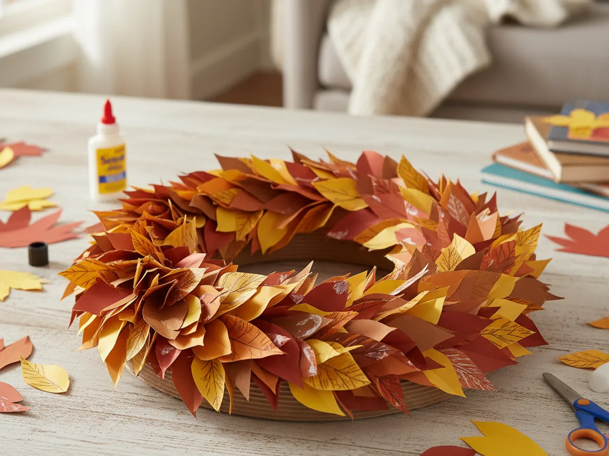
2. Paper Pumpkin
Cut six or eight identical leaf or petal shapes from orange cardstock, then fan them out and glue them together at the bottom to form a round pumpkin shape. Add a short brown paper stem and a tiny green paper leaf at the top. Paper pumpkins are one of the simplest and most satisfying fall crafts for young children, and they can be made in any size. Line up a row of them along a windowsill for an instant autumn display.
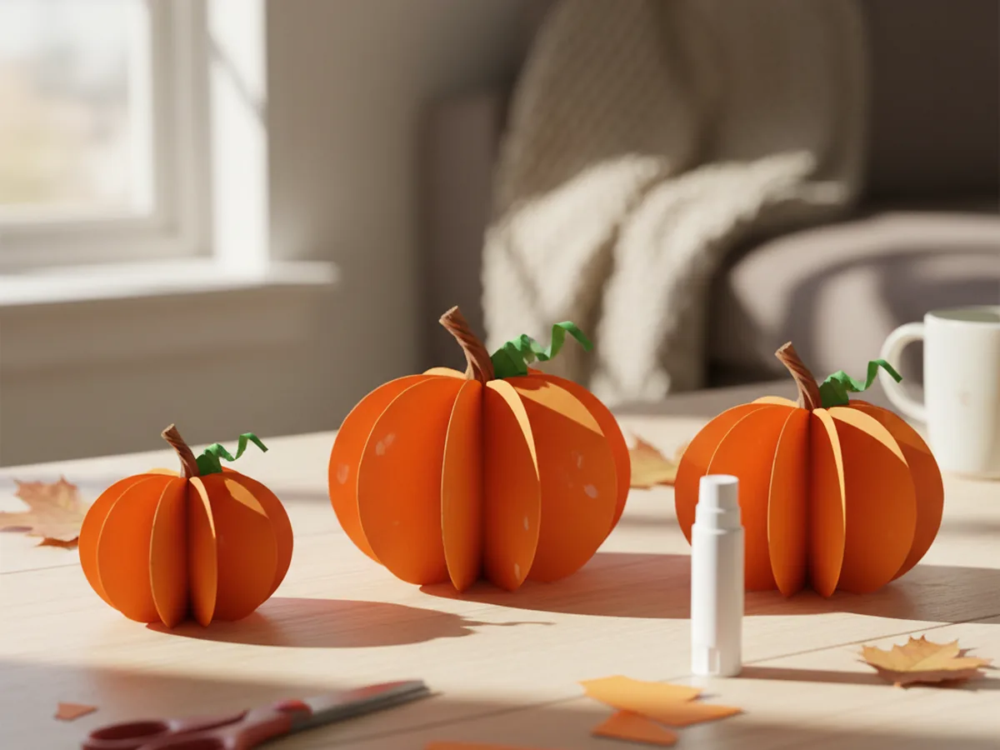
3. Paper Hedgehog with Leaf Spines
Cut a round hedgehog body from brown paper and draw on a simple face with a small black marker nose. Then cut out small leaf shapes in autumn colors and glue them across the back of the body in overlapping rows to create the spines. The result is an absolutely adorable little character that feels very much of the season. This is one of those fall paper crafts that younger kids can easily help with by gluing on the leaves one at a time.
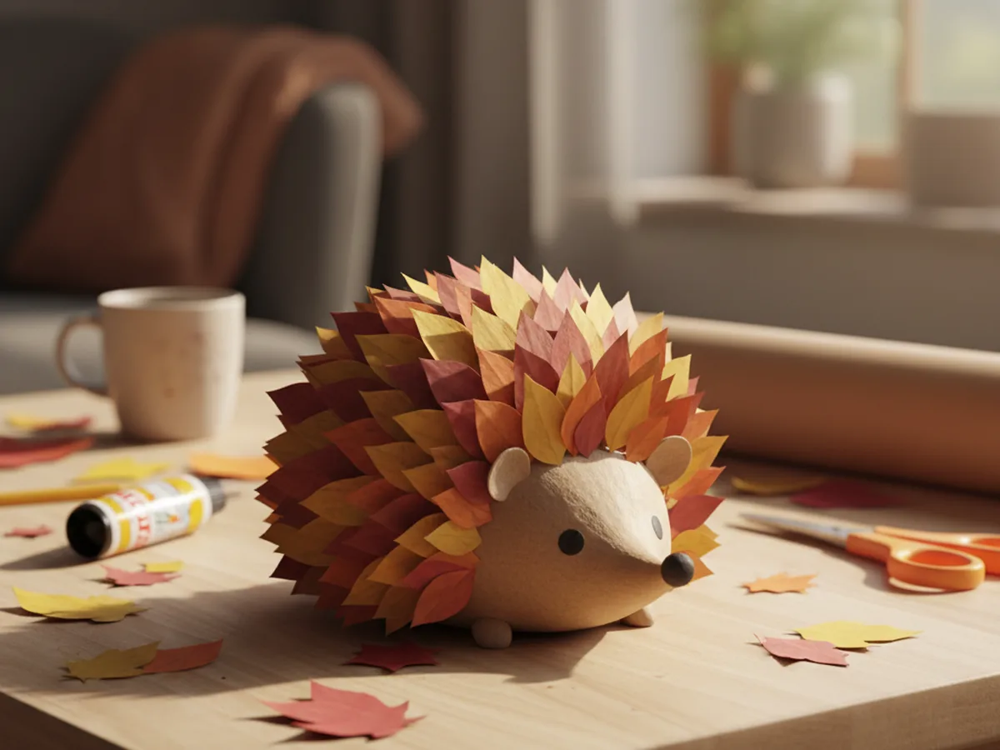
4. Paper Acorn
Cut a smooth oval shape from light brown paper for the acorn body and a scalloped cap shape from darker brown for the top. Glue them together and add a short paper twist for the stem. Simple, sweet, and very quick to make, this is a great filler project for younger children who want to join in on the fall paper craft fun without a long attention commitment. Make a whole bowl of paper acorns to scatter across a table as autumn decor.
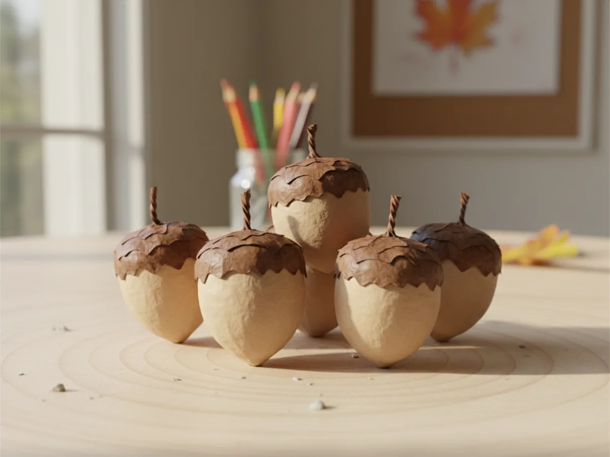
5. Paper Fall Tree
Cut a simple tree trunk and branch shape from brown paper and glue it to a white or blue background. Then tear or cut small pieces of orange, red, yellow, and green paper and glue them all over the branches like leaves. Younger toddlers can do most of this craft on their own once the trunk is in place, which makes it feel extra special. This classic fall paper craft looks beautiful framed and is a sweet keepsake from the season.
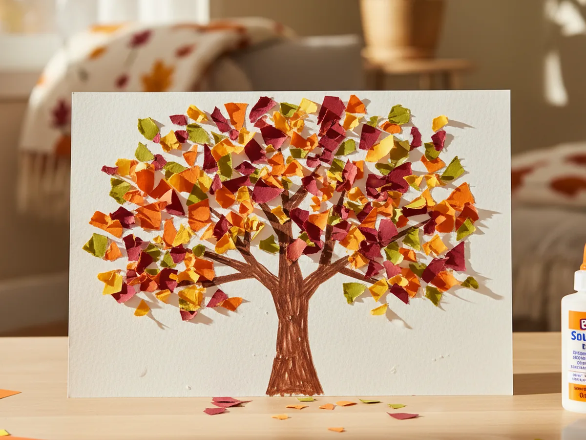
6. Paper Owl
Cut an oval body from brown or orange paper, two large white circle eyes with black paper pupils, a small orange triangle beak, and two small wing shapes from a slightly darker shade. Glue everything together to build the owl face and add self-adhesive googly eyes for a fun wobbling effect. Paper owl crafts are a fall classic that children always love because the result is immediately recognizable and genuinely cute. These little owls look wonderful lined up on a shelf.
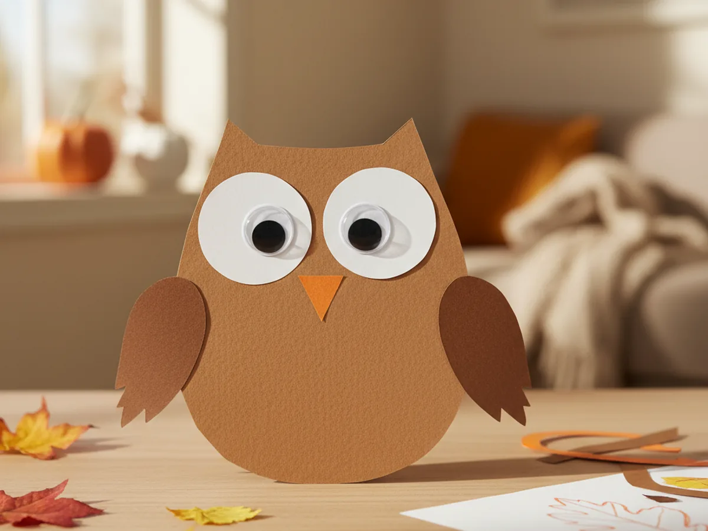
7. Paper Scarecrow
Build a scarecrow from layered paper shapes: a straw hat cut from yellow and brown paper, a simple shirt shape in plaid-drawn cardstock, trouser shapes, and strips of yellow paper fringe peeking out from the sleeves and hat brim. Mount the whole figure on a craft stick or straw. A paper scarecrow is a slightly more involved fall paper craft that works well for ages five and up, and the playful result makes a charming piece of autumn decor.
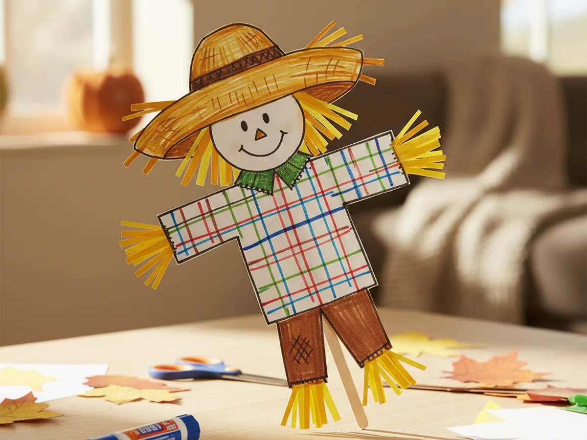
8. Paper Leaf Garland
Trace and cut out leaf shapes in a mix of autumn colors, then punch a small hole at the top of each leaf and thread them all onto a length of twine or yarn, spacing them evenly apart. You can make the leaves as simple or as detailed as you like. This makes a beautiful decoration that children can actually hang in their room when they are done. A paper leaf garland is one of those fall paper crafts that looks impressive but is actually very manageable for young kids.
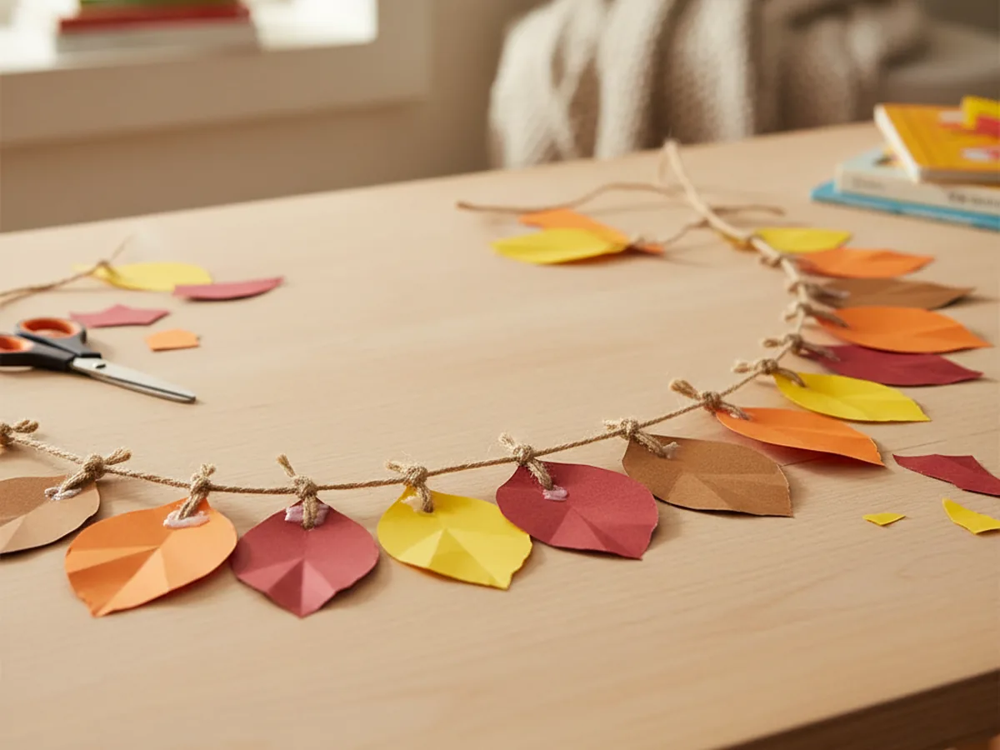
9. Paper Fox
Cut a large orange triangle for the fox head, two small pointed ears in orange and white, a white oval muzzle, and a small black triangle nose. Assemble the face and add googly eyes for a charming, slightly cartoonish result. Paper foxes are one of the most popular fall paper crafts for a reason: they are undeniably cute and children love decorating them with tiny details. You can also add a fluffy white-tipped tail cut from paper to make a full-body fox.
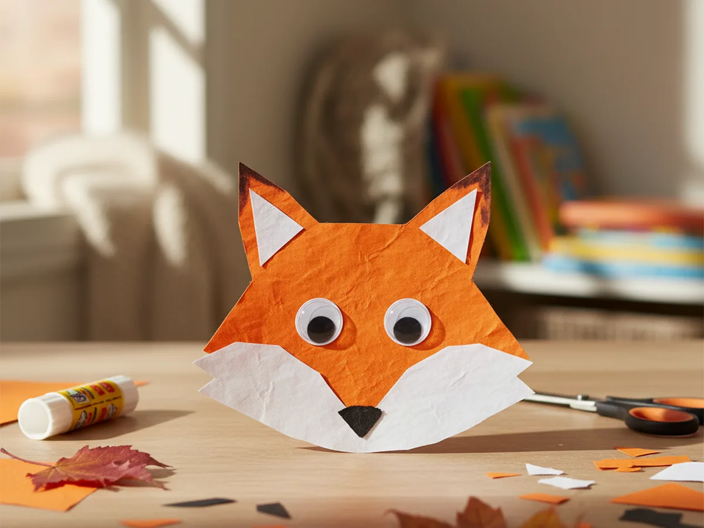
10. Paper Apple
Cut a large apple shape from red or green cardstock, add a small brown paper stem and a green leaf shape at the top, and let your child draw seeds and detail lines with a marker. This is one of the fastest and most toddler-friendly fall paper crafts on the list, and it pairs perfectly with an autumn nature walk or apple-picking outing. Kids can make a whole basket of colorful paper apples in just a few minutes together.
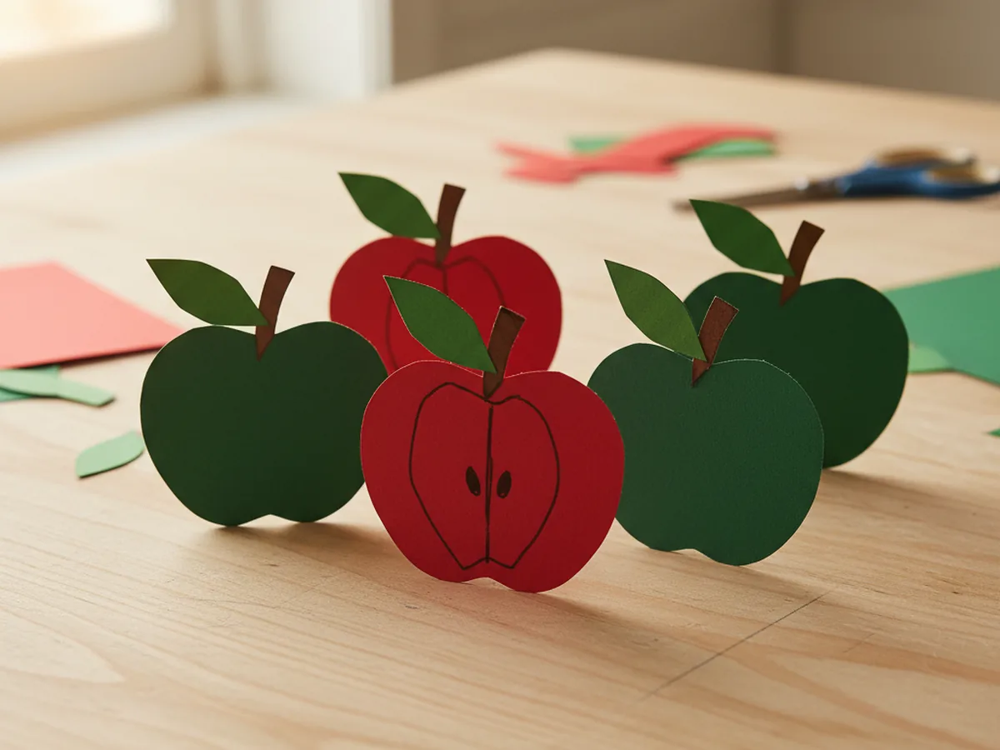
11. Paper Mushroom
Cut a round red or orange cap shape and a white rectangular stalk, then cut small white circles and glue them onto the cap to create the classic spotted mushroom look. Draw a happy face on the stalk if you like a more playful feel. Paper mushrooms fit beautifully with the forest theme of the season and are a charming addition to any fall paper craft display. They also look wonderful when made in a group of three or four in different sizes.
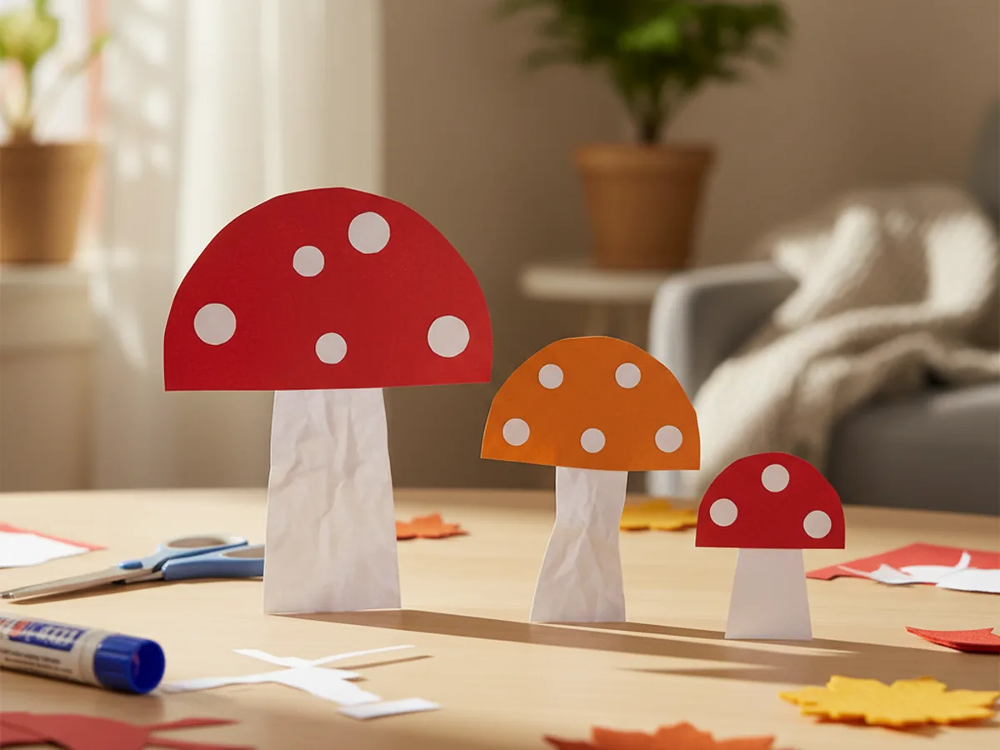
12. Paper Corn on the Cob
Cut a long oval husk shape from green paper and glue several small yellow squares in tight rows across a tan or white paper base to create the corn kernels. Fold the edges of the green husk over the sides slightly and add thin brown paper strips at the top for the silk. This is a wonderfully unique fall paper craft that feels right at home on a Thanksgiving table or autumn classroom bulletin board.
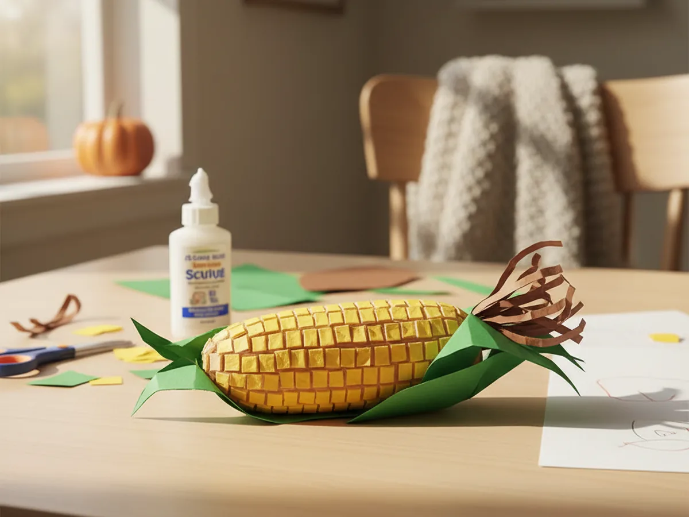
13. Paper Sunflower
Cut a large circle from brown or dark yellow cardstock for the center, then cut long petal shapes from bright yellow paper and glue them all the way around the edge. Add a long green paper stem and two leaf shapes to finish. Sunflowers are a late summer and early fall classic that children absolutely love making, and a finished fall paper sunflower looks bright and cheerful in any room. You can also make a whole bouquet and present it as a gift.
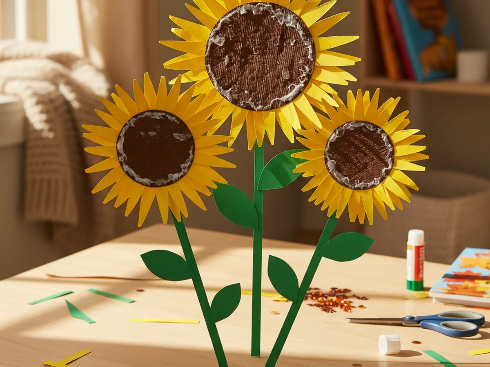
14. Paper Leaf Bookmark
Cut a leaf shape from cardstock in any autumn color, draw veins with a marker, and laminate it or cover it with clear tape to give it a bit of durability. Kids who love books will be especially proud of this one since they get to use their finished craft every single day. A paper leaf bookmark is one of the most practical fall paper crafts on this list, and it makes a lovely little handmade gift for a teacher or grandparent too.
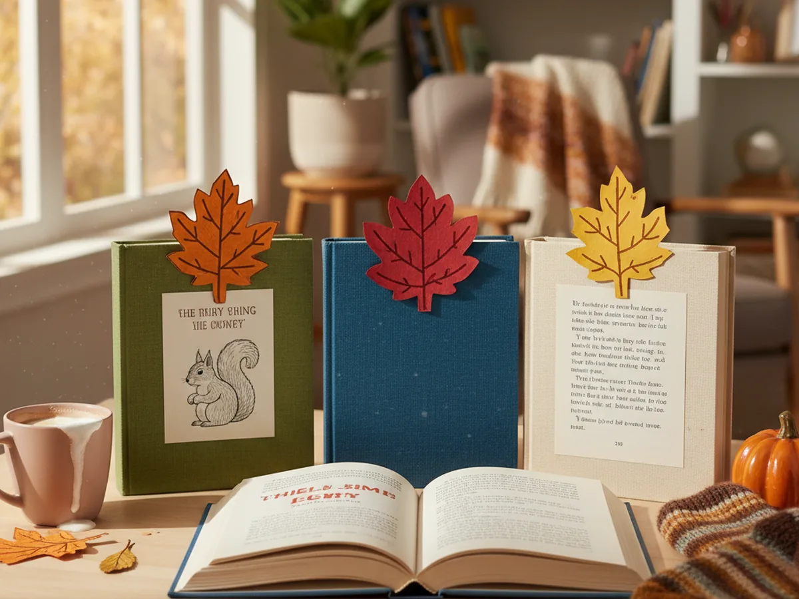
15. Paper Squirrel
Cut a round body shape and a large fluffy tail from brown or grey paper, add a small head circle, tiny ears, and a googly eye, and glue it all together with the tail curving up behind the body. You can also give the squirrel a tiny paper acorn to hold. This is one of those fall paper crafts that children want to make more than once because they end up with a little character they genuinely like. A family of squirrels looks adorable displayed on a windowsill.
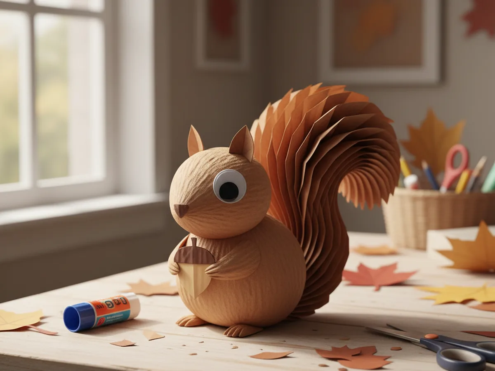
16. Paper Leaf Crown
Cut a long band of cardstock to fit around your child's head, then cut leaf shapes in autumn colors and glue them upright all along the top edge to create a leafy crown. Fit the band to size and tape or staple the ends together. Paper leaf crowns are one of the most wearable and joyful fall paper crafts for young children, and they love parading around the house in them. This also makes a sweet activity for a fall birthday party or harvest celebration.
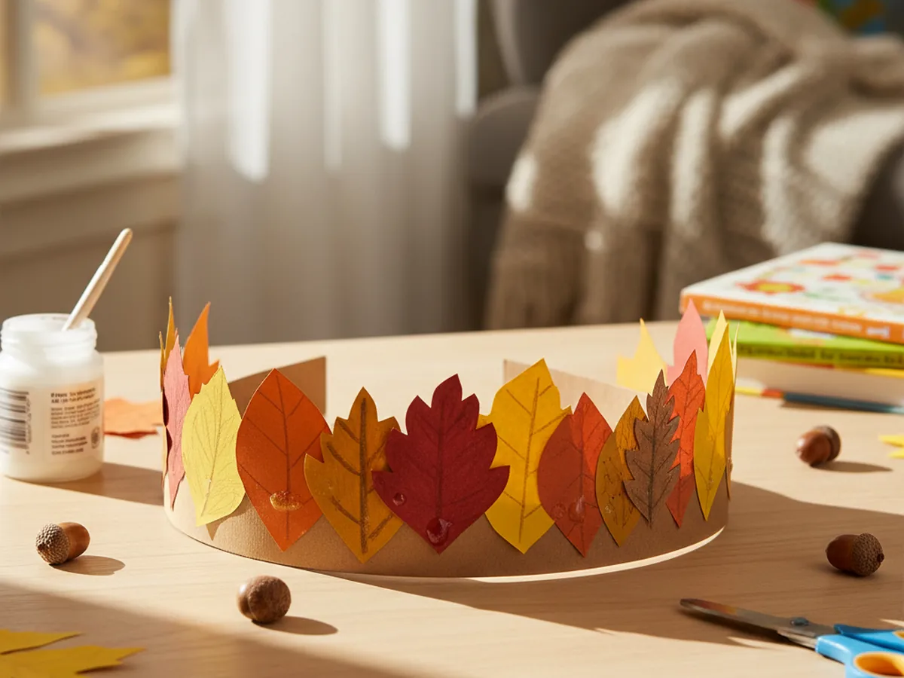
17. Paper Roll Pumpkin Lantern
Roll a sheet of orange paper into a cylinder, tape the seam, and use scissors to make evenly spaced vertical cuts from the bottom upward, stopping about two inches from the top. Gently press down on the cylinder to fan the strips outward into a rounded pumpkin belly shape. Add a small green paper stem and a brown or green paper leaf. This clever fall paper craft requires only one sheet of paper and a few snips, making it perfect for even the youngest crafters with a little help.
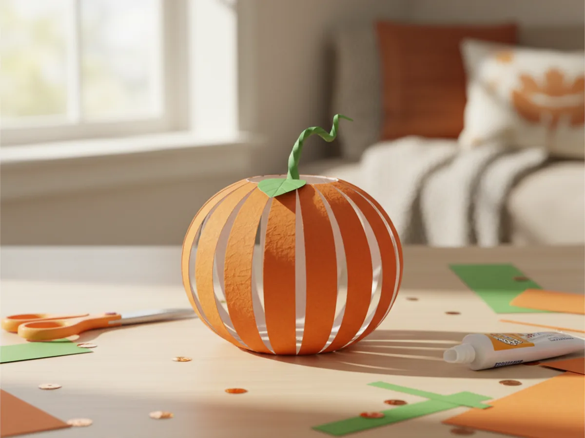
18. Paper Harvest Basket
Fold and cut a simple basket shape from brown cardstock, then weave thin orange and tan paper strips horizontally across the front for a woven texture. Fill the basket with tiny paper fruits and vegetables, such as small apple shapes, mini pumpkins, or ear-of-corn cutouts. A paper harvest basket makes a lovely autumn centerpiece and is one of those slightly more involved fall paper crafts that older children aged five and up will really enjoy putting together step by step.
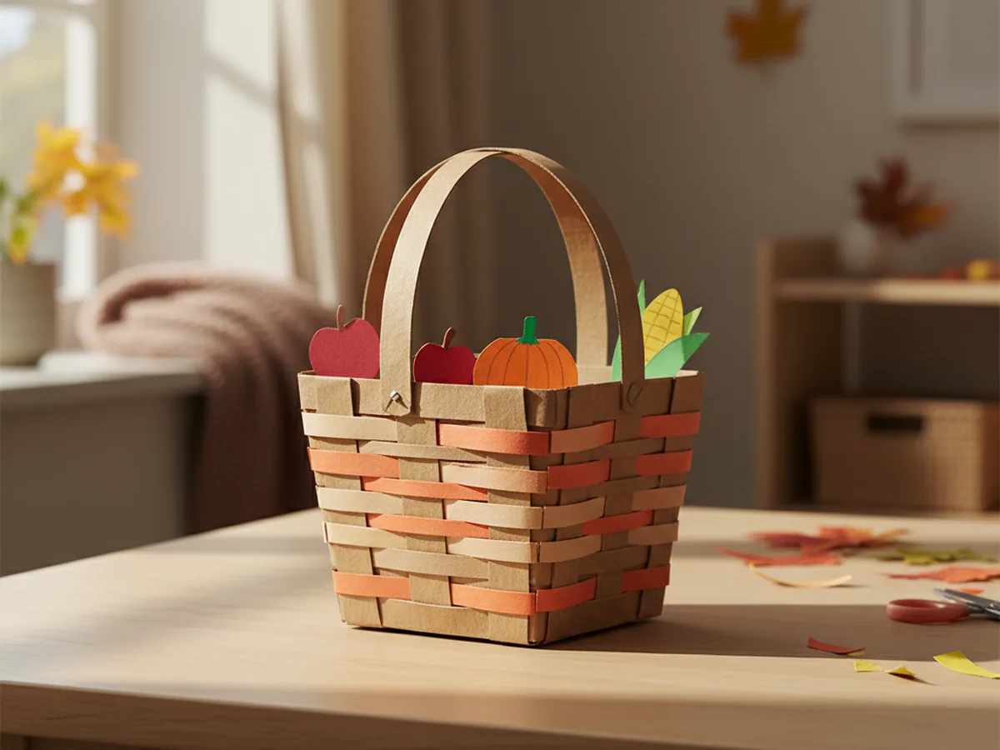
19. Paper Bear in Autumn Colors
Cut a round head and a slightly larger oval body from light brown paper, add small round ears, a white or cream oval muzzle, and a small black nose. Dress your paper bear in a little scarf cut from orange or red paper folded and glued around the neck. Paper bears in autumn colors feel right at home in a fall paper crafts collection, and younger toddlers will love this one because the shape is simple and the result is immediately huggable-looking.
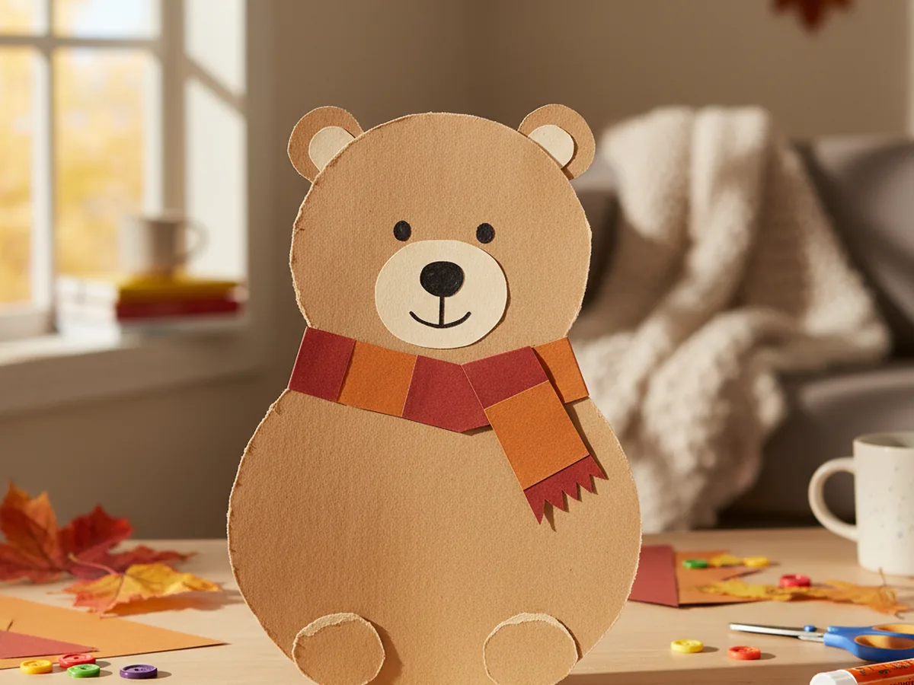
20. Paper Leaf Mobile
Cut leaf shapes in a variety of autumn colors and sizes, punch a small hole in each one, and tie them onto lengths of string at different heights. Tie the strings to a wooden twig or a dowel rod and hang the whole mobile near a window where the leaves can sway gently in the breeze. A paper leaf mobile is one of the most beautiful fall paper crafts on this list, and children feel genuinely proud when they see it hanging up as a real piece of room decor. 🍁
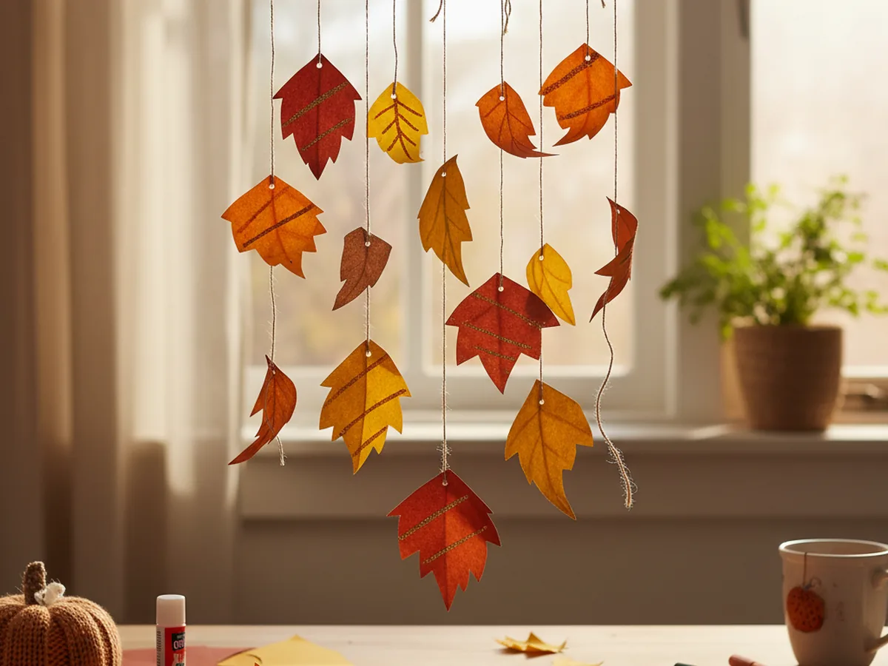
Final Thoughts
Fall is one of the most generous seasons for craft inspiration, and these 20 fall paper crafts prove that you do not need a big budget or a lot of skill to make something truly sweet together. Whether you spend an afternoon working through several ideas or pick just one that catches your child's eye, the moments you create along the way are what will stay with them longest. Pull out the orange and brown paper, clear a spot at the table, and enjoy the season together. 🍂
More Crafts You'll Love
If you enjoyed these fall crafts, here are a few more paper projects your kids will love any time of year.
Happy crafting, and enjoy every colorful, cozy moment this fall season brings.